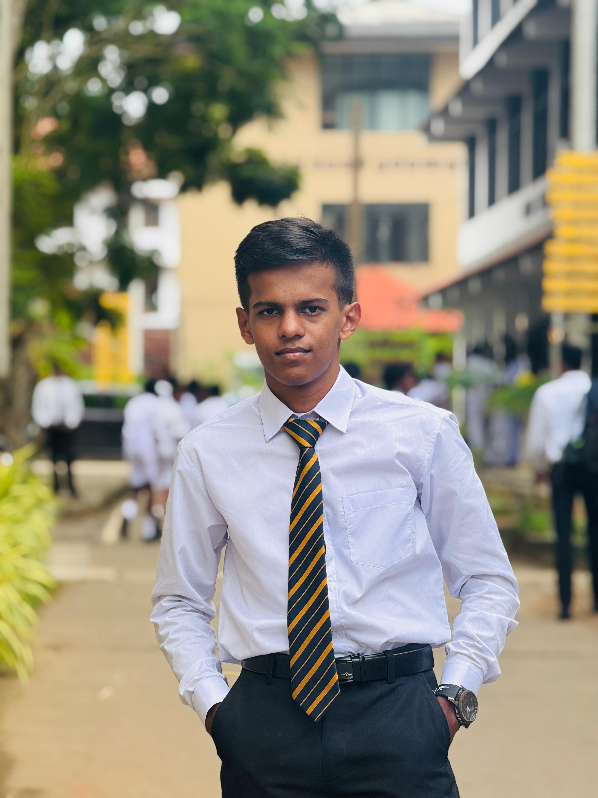

About me
I am an undergraduate student pursuing a degree in Manufacturing and Industrial Engineering at the University of Peradeniya. I am passionate about engineering, technology, innovation, and continuous learning, with a particular interest in developing practical solutions that connect engineering principles with modern technology.
I completed my education from Grade 1 to G.C.E. Ordinary Level (O/L) at MR/Beralapanathara National School and completed my G.C.E. Advanced Level (A/L) at Rahula College, Matara. My academic journey has developed my foundation in analytical thinking, problem-solving, and technical learning, which I continue to strengthen through my university studies.
Alongside my engineering education, I am developing my programming skills in Python, C, and HTML, with the goal of applying programming and computational tools to engineering and technology-related projects. I am also improving my communication and international language skills by learning English and German.
I believe in continuous self-development and enjoy exploring new areas of engineering and technology. My goal is to build strong technical expertise, gain practical experience through projects, and develop into a professional capable of contributing to innovative and technology-driven engineering solutions.
